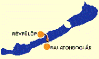

|
|
Balatonederics
|
| |
Lage: Balatonederics
liegt 170 km entfernt von Budapest am Balaton-Nordufer
auf halber Strecke zwischen Keszthely und Badacsony. Hier
treffen
die Landstraßen 71 und 84 zusammen. Ein
Großteil der
Ortschaft dient Erholungszwecken und hat einen schönen
Badestrand
am Balaton.
|

|
|
Die Ortschaft
Ederics - wurde
zuerst im Jahre 1262 urkundlich genannt. Seine
römisch katholische Kirche steht in der Dorfmitte,
auf einem
kleinen Hügel. Vermutlich stammt sie aus der Zeit des
Königshauses
Árpád um die erste Jahrtausendwende.
Die
ursprüngliche Bevölkerung
wurde im Jahre
1572 von den Türken vollständig abgemetzelt, dabei
waren alle Häuser angezündet.
Zur
Entvölkerung kam es zudem in den umgebenden Dörfern, weil die
Jungedlichen laufend nach Istambul verschleppt
wurden - die Mädchen in die Harems der türkischen Obrigkeit,
die Jungs wurden dort zu türkischen Janitscharen umerzogen.
Nach der Vertreibung der Türken war diese Gegend
weitgehend menschenleer
- wie weite Teile Ungarns -
und so begannen die Habsburger
Anfang
des 18. Jahrhunderts mit der Ansiedlung von Fachleuten aus
verschiedenen Ländern,
ähnlich wie in Zamárdi am Plattensee Südufer.
Die meisten kamen
damals
aus dem deutschsprachigen Raum. Die
neuen Siedler sorgten für eine Belebung der Wirtschaft
und Steuereinnahmen für die Landesherren, Kirche und Staat. Nach dem zweiten Weltkrieg fand eine
selektive Vertreibung der Deutschen
aus ganz
Ungarn
statt,
gefolgt von gesetzwidriger Enteignung der Vertriebenen.
Sie hinterließen am
Weinberg "Újhegy" mehrere sehenswerte
Kelterhäuser, die heute als volkstümliche Baukunst
angepriesen werden
- Kunst der nicht mehr Einheimischen.
|
Die Ortschaft ist bei Autofahrern durch das Afrika
Museum in
einem
Safaripark (Kültelek 11) bekannt, das auf der Landstrasse gut
ausgeschildert und aus der Ferne sichtbar ist. Hier kann man
zwischen Massai-Hütten auf Kamel reiten und ein
Kameltreiber-Diplom erwerben. Toll - und bestimmt wertvoll.
|
 |
Die
ursprünglich im romanischen Stil erbaute Dorfkirche
wurde zwischen 1870 und 1895 so umfangreich renoviert, dass
sie ihre charakteristischen Merkmale fast völlig verlor. Die
vor der Kirche stehende Dreifaltigkeitsstatue stammt aus dem Jahre 1871.
Eine
dendrologisch interessante Sehenswürdigkeit befindet sich im
Park des Schloßes "Fekete" unweit von Balatonederics.
Sehenswerte Objekte sind dort viele einheimische und exotische Nackt-
und Bedecktsamer, überwiegend Fichten und Laubbäume. |
|
|
Erst
kürzlich wurde die in Westungarn größte farbige
Tropfsteinhöhle
entdeckt, die
"Csodabogyós"-Höhle. Sie wird noch wissenschaftlich
erforscht und könnte eines Tages zu einer der
größten touristischen Attraktionen der Umgebung
werden. |
 |
|
Durchschwimmen des Balatons
- Ende Juli eine uralte
Volksgaudi
Strecke
Révfülöp-Balatonboglár
- Beim
größten
Süßwasser-Schwimmturnier Mitteleuropas gehen seit
Jahren mehrere Tausend Teilnehmer an den Start, um die alles
abfordernde Strecke von 5,2 km zu bewältigen. |
 |
|
| |
| |
|
Ungarn-Tourist Team

|
| |
| |
|